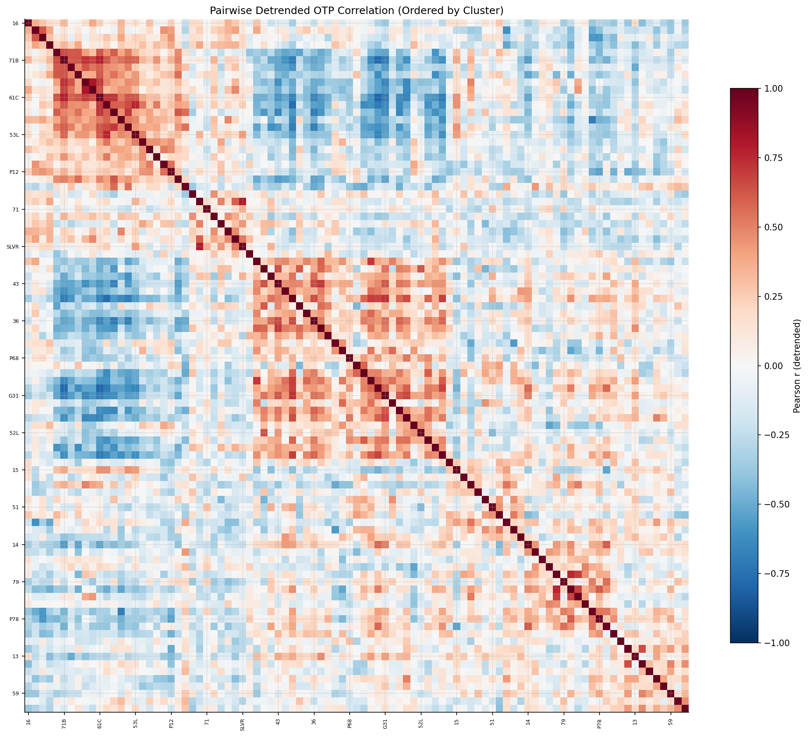
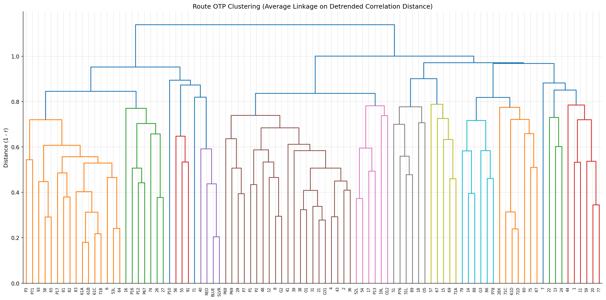

Analysis
13: Cross-Route Correlation Clustering
Route and Service Drivers
Coverage: 2019-01 to 2025-11 (from otp_monthly).
Built 2026-03-20 19:26 UTC · Commit 174c909
Page Navigation
Analysis Navigation
Data Provenance
flowchart LR
13_correlation_clustering(["13: Cross-Route Correlation Clustering"])
t_otp_monthly[("otp_monthly")] --> 13_correlation_clustering
01_data_ingestion[["Data Ingestion"]] --> t_otp_monthly
t_route_stops[("route_stops")] --> 13_correlation_clustering
01_data_ingestion[["Data Ingestion"]] --> t_route_stops
t_routes[("routes")] --> 13_correlation_clustering
01_data_ingestion[["Data Ingestion"]] --> t_routes
d1_13_correlation_clustering(("numpy (lib)")) --> 13_correlation_clustering
d2_13_correlation_clustering(("polars (lib)")) --> 13_correlation_clustering
d3_13_correlation_clustering(("scipy (lib)")) --> 13_correlation_clustering
classDef page fill:#dbeafe,stroke:#1d4ed8,color:#1e3a8a,stroke-width:2px;
classDef table fill:#ecfeff,stroke:#0e7490,color:#164e63;
classDef dep fill:#fff7ed,stroke:#c2410c,color:#7c2d12,stroke-dasharray: 4 2;
classDef file fill:#eef2ff,stroke:#6366f1,color:#3730a3;
classDef api fill:#f0fdf4,stroke:#16a34a,color:#14532d;
classDef pipeline fill:#f5f3ff,stroke:#7c3aed,color:#4c1d95;
class 13_correlation_clustering page;
class t_otp_monthly,t_route_stops,t_routes table;
class d1_13_correlation_clustering,d2_13_correlation_clustering,d3_13_correlation_clustering dep;
class 01_data_ingestion pipeline;
Findings
Findings: Cross-Route Correlation Clustering
Summary
After detrending (subtracting system-wide monthly mean OTP), hierarchical clustering on pairwise OTP correlations produced 6 clusters (selected by silhouette score optimization). Detrending removes the dominant COVID/seasonal signal that otherwise causes all routes to appear positively correlated, revealing genuine differential behavior.
Key Numbers
| Cluster | Routes | Avg OTP | Avg Stops | Character |
|---|---|---|---|---|
| 1 | 23 | 66.8% | 118 | Lowest-performing cluster, high stop count |
| 2 | 9 | 74.0% | 114 | Best-performing cluster |
| 3 | 27 | 71.8% | 105 | Largest cluster, above-average performance |
| 4 | 11 | 69.4% | 106 | Mid-performing |
| 5 | 13 | 67.5% | 108 | Below-average |
| 6 | 10 | 68.9% | 146 | Highest stop count |
- Silhouette scores ranged from 0.13 to 0.18 (k=6 was optimal at 0.178)
- 0 route pairs excluded for insufficient overlap
Methodology
- Detrending: System-wide monthly mean OTP is subtracted from each route's OTP before computing correlations. This ensures clusters reflect differential route behavior rather than common system-wide trends (COVID, seasonal cycles).
- Linkage: Average linkage (valid for non-Euclidean correlation distance), replacing the original Ward's method.
- Cluster count: Selected by silhouette score optimization over k=3..10, replacing the hardcoded k=6.
- Imputation: Route pairs with insufficient overlap are imputed with median correlation rather than 0.0.
Observations
- With detrending, the clusters are more evenly sized and differentiated by OTP level.
- The highest stop-count cluster (Cluster 6, 146 avg stops) does not have the worst OTP (68.9%), suggesting that after removing system-wide trends, route complexity alone doesn't determine co-movement.
- Low silhouette scores (0.13-0.18) indicate moderate cluster separation -- routes don't form tightly distinct groups. This is expected given that detrended OTP residuals have limited signal.
- Without depot or corridor data, the clusters remain descriptive -- we can see which routes move together but cannot explain why.
Caveats
- Silhouette scores below 0.25 indicate weak cluster structure. The 6-cluster solution is the best available, but route co-movement may be more continuous than discrete.
- All modes are pooled. With only ~3 rail routes, stratification by mode is not feasible.
Review History
- 2026-02-10: RED-TEAM-REPORTS/2026-02-10-analyses-12-18.md — 5 issues (2 significant). Detrended correlations, average linkage, silhouette-based k selection; cluster composition changed entirely.
Output

pairwise correlation matrix ordered by cluster.

hierarchical clustering dendrogram.
No interactive outputs declared.
route-to-cluster assignment with cluster characteristics.
Preview CSV
Methods
Methods: Cross-Route Correlation Clustering
Question
Which routes' OTP values move together over time? Identifying co-moving clusters could reveal shared causal factors -- same corridor, same depot, same traffic bottleneck, or common external shocks.
Approach
- Build a route x month matrix of OTP values from
otp_monthly. - Filter to routes with at least 36 months of data to ensure meaningful correlations.
- Compute pairwise Pearson correlation between every pair of routes' monthly OTP series (using only overlapping months).
- Convert correlation to distance (1 - r) and apply Ward's hierarchical clustering via
scipy.cluster.hierarchy. - Cut the dendrogram to produce a manageable number of clusters (target ~5-8).
- Characterize each cluster by mode, average OTP, stop count, and geographic location.
- Visualize with a dendrogram and a clustered correlation heatmap.
Data
| Name | Description | Source |
|---|---|---|
otp_monthly |
Monthly OTP per route (time series) | prt.db table |
routes |
Mode and name for labeling | prt.db table |
route_stops |
Stop count per route for cluster characterization | prt.db table |
stops |
Geography for cluster characterization | prt.db table |
Notes: route_stops is joined to stops to derive stop count and geographic location per route.
Output
output/cluster_membership.csv-- route-to-cluster assignment with cluster characteristicsoutput/dendrogram.png-- hierarchical clustering dendrogramoutput/correlation_heatmap.png-- pairwise correlation matrix ordered by cluster
Sources
| Name | Type | Why It Matters | Owner | Freshness | Caveat |
|---|---|---|---|---|---|
| otp_monthly | table | Primary analytical table used in this page's computations. | Produced by Data Ingestion. | Updated when the producing pipeline step is rerun. | Coverage depends on upstream source availability and ETL assumptions. |
| route_stops | table | Primary analytical table used in this page's computations. | Produced by Data Ingestion. | Updated when the producing pipeline step is rerun. | Coverage depends on upstream source availability and ETL assumptions. |
| routes | table | Primary analytical table used in this page's computations. | Produced by Data Ingestion. | Updated when the producing pipeline step is rerun. | Coverage depends on upstream source availability and ETL assumptions. |
| numpy | dependency | Runtime dependency required for this page's pipeline or analysis code. | Open-source Python ecosystem maintainers. | Version pinned by project environment until dependency updates are applied. | Library updates may change behavior or defaults. |
| polars | dependency | Runtime dependency required for this page's pipeline or analysis code. | Open-source Python ecosystem maintainers. | Version pinned by project environment until dependency updates are applied. | Library updates may change behavior or defaults. |
| scipy | dependency | Runtime dependency required for this page's pipeline or analysis code. | Open-source Python ecosystem maintainers. | Version pinned by project environment until dependency updates are applied. | Library updates may change behavior or defaults. |